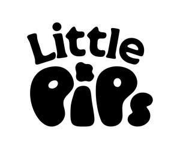

Trade Mark Journal No.2025/010 7 March 2025
UK00004161987 18 February 2025 (9,16,25,41,43)

- Class 9
- Computer software; computer applications for creating, authoring, downloading, transmitting, receiving, editing, extracting, encoding, decoding, displaying, storing and organising text, graphics, images, and electronic publications; computer software for downloadable publications; data recordings including audio, video, still and moving images and text; downloadable electronic publications, text books, brochures, reports, booklets, leaflets, newsletters, manuals, magazines and periodicals; computer software and computer applications for accessing, browsing and searching online databases; podcasts; CDs, DVDs, discs, tapes and videos; teaching apparatus and instruments; parts, fittings and accessories for the aforesaid goods.
- Class 16
- Paper and cardboard; printed matter; printed publications; newspapers; magazines; books; instructional and teaching materials; booklets; brochures; reports; leaflets; newsletters; periodicals; educational materials for use in teaching; brochures and prospectuses; labels; catalogues; calendars; folders; posters; instructional and teaching materials (other than apparatus); stationery; notepads; writing instruments; artists' materials.
- Class 25
- Clothing; footwear; headgear; belts; scarves; ties; hats and caps; sweaters; sweatshirts and t-shirts; polo shirts; sportswear; coats; shirts; blouses; articles of outer clothing; articles of underclothing; articles of sports clothing; hooded tops; tracksuits; t-shirts; hats and caps; jackets; wristbands; headbands; ties; school uniform.
- Class 41
- Education services; schools and boarding schools; educational and teaching services; undergraduate, postgraduate and vocational education and training services; teaching, tuition, training and instruction services, all being educational or vocational; provision of courses of instruction; provision of correspondence courses; education, instruction and training provided online from a computer database or from the internet; education examination services; arranging and conducting educational conferences, lectures, exhibitions, day schools, workshops and seminars; development of teaching and assessment methods; rental of educational material and apparatus; research, advisory and consultancy services, all relating to education and training; provision of training facilities for the teaching of academic subjects and vocational skills; provision of information and reports, all relating to education, training, academic subjects and vocational skills and matters; publication of books, magazines, journals, printed matter, texts, periodicals, photographs, and instructional and training materials; arranging and conducting conferences, lectures, exhibitions, day schools, workshops and seminars, all for entertainment purposes; radio and television entertainment services; theatre and cinema services; theatre production services; rental of cine-film, cine-film projectors, videos, video records, sound records and sound recording apparatus; photography and videotaping services; art gallery and exhibition services; concert services; live music performances; club entertainment services; provision of club recreation facilities; recreation services; provision of recreational facilities; provision of sporting facilities; physical fitness instruction; physical education services; provision of educational facilities and facilities for sporting events; organising of sporting activities and sports competitions; sports refereeing and officiating; staging of sports tournaments; provision of gymnasium facilities; provision of club sporting facilities; rental of sports apparatus; professional consultancy relating to vocational and educational matters; career counselling and vocational guidance; research services relating to vocational and educational matters; radio and television recording services; nursery schools; nursery school services; information, advice and consultancy services in relation to the aforesaid services.
- Class 43
- Day nursery services; children's creches; creche services; provision of cafés and canteen services; catering services; providing food and drink; provision of conference facilities; provision of venues for day schools and training sessions; cafeteria, coffee shop, snack bar services; food cooking services; chef services; preparation of foodstuffs and meals for consumption off the premises; information, advice and consultancy services in relation to the aforesaid services.
The Pocklington School Foundation
Representative: Womble Bond Dickinson (UK) LLP